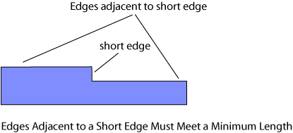

|
 |
 |
||||||
|
|
|
||||||
The built-in oacMinEdgeAdjacentLength layer constraint specifies the minimum length of edges on a polygon when the length of an adjacent short edge is less than a specified length.
| Constraint type: | oaLayerConstraint |
| Value types: | oaIntValue, oaDualIntValue |
| Database types: | oaDesign, oaTech |
| Object types: | oaAppObject |
The following value types are supported by this constraint:
This oaIntValue specifies the minimum length of adjacent edges in database units
Units: DBU
This oaDualIntValue specifies the minimum length of each adjacent edge separately.
Units: DBU
The following parameters are supported by this constraint:
| Name | Value Type | Units | Default | Description |
|---|---|---|---|---|
| maxLength oacMaxLengthConstraintParamType |
oaIntValue | DBU | (Required) |
An integer value that specifies the maximum length of the short edge. |
| convexCorner oacConvexCornerConstraintParamType |
oaBooleanValue | Boolean | False (only valid for value types: oaIntValue) |
Indicates that if a convex corner is between two concave corners, and if one of the length of the edges to form the convex corner is less than the constraint value, then the other length must be greater than or equal to maxLength. |
| count oacCountConstraintParamType |
oaIntValue | Count | (Required) |
An oaIntValue that specifies the maximum number of connected short edges that trigger this constraint. |

Foundries require control over the minimum length of edges on a polygon that are adjacent to a short edge. Some foundries require separate control over the minimum length of each edge adjacent to the short edge.
Copyright 2002 - 2010 Cadence Design Systems, Inc.
All rights reserved.